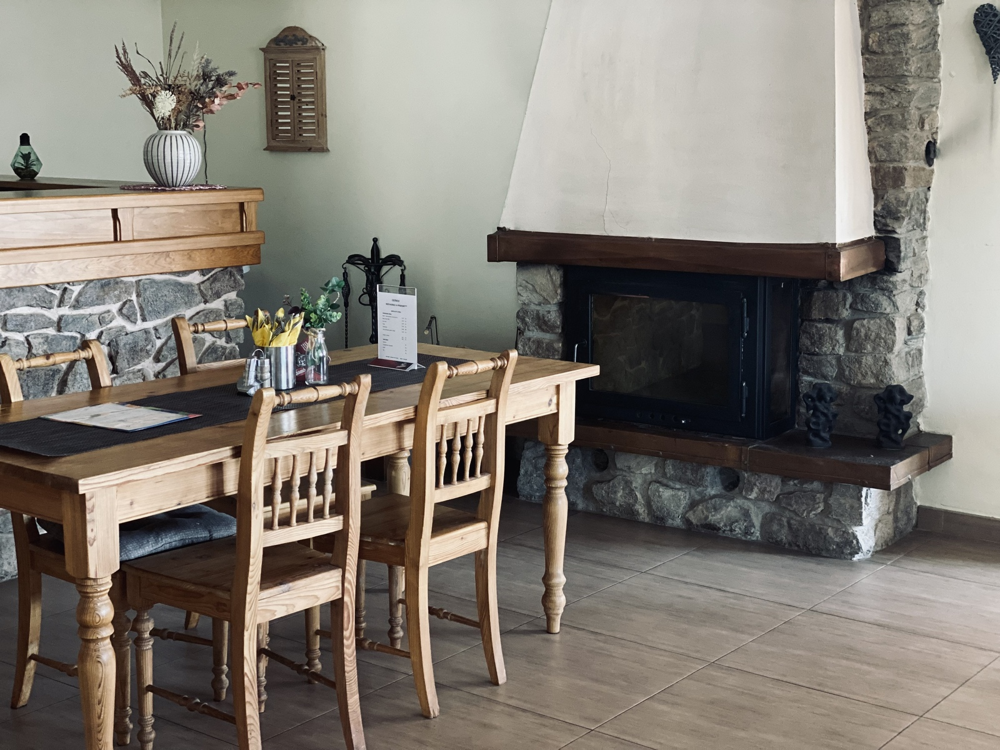
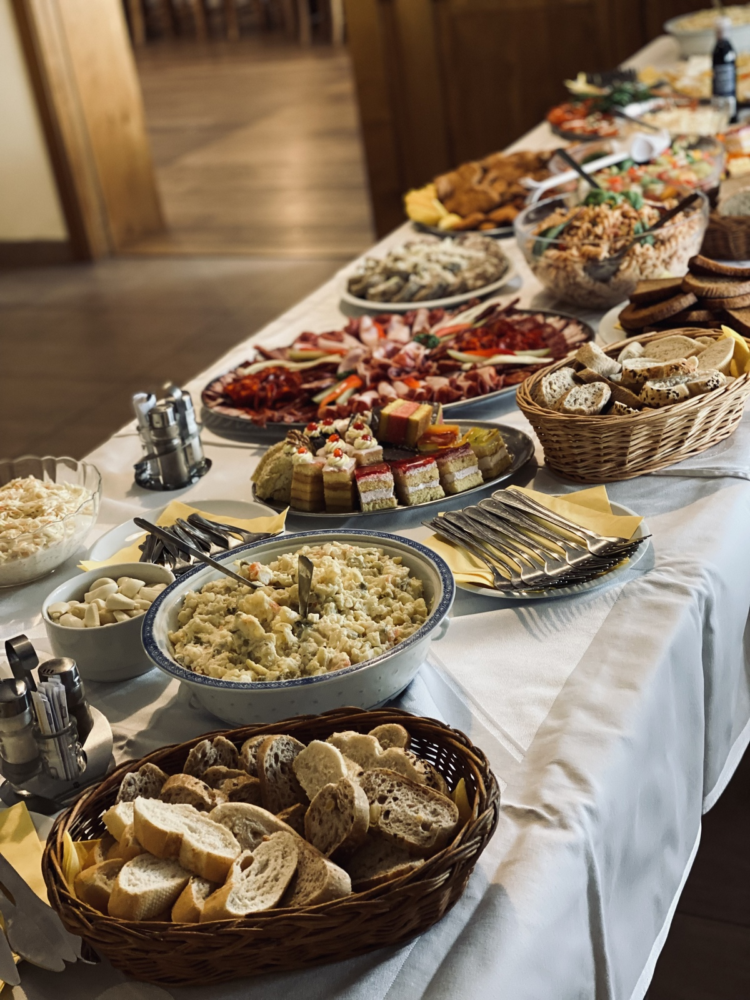
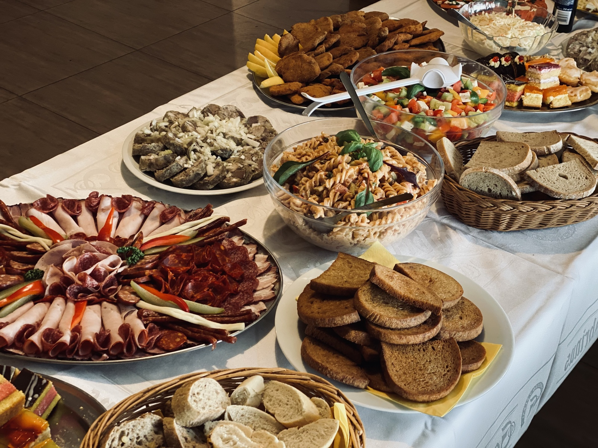
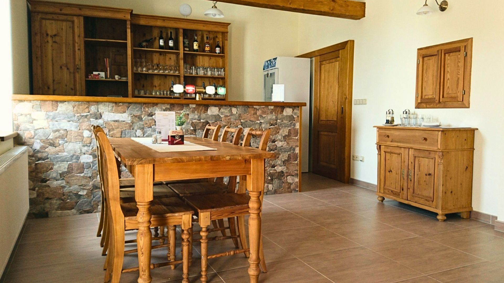

JAK TO ZAČALO
Objekt byl dříve provozován pouze jako restaurace pod názvem BUS s tradicí dlouhých 15 let. Následně prošel rozsáhlou rekonstrukcí a nástavbou celého patra pro penzion. Vzniklo tak místo s příjemným a klidným prostředím, ideální pro posezení i ubytování při služební cestě nebo výletě.
ZÁZEMÍ A PROSTORY
Restaurace je rozdělena na dva prostory o kapacitě 15 a 40 míst. V letní sezóně si navíc můžete užít venkovní terasu s 12 místy k sezení. Penzion nabízí ubytování s celkovou kapacitou 20 lůžek, najdete u nás dvoulůžkové i vícelůžkové pokoje a jeden apartmán. Samozřejmostí je v celém objektu bezplatné Wi-Fi připojení a možnost platby kartou či stravenkami.
OSLAVY A AKCE
Hledáte místo pro svou akci? Po předchozí domluvě pro vás rádi uspořádáme rodinné oslavy, svatební hostiny nebo firemní akce přesně podle vašich představ.
VÝLETY DO OKOLÍ
Jsme jen 2 km od dálnice D5 a pouhých 5 km od slavného Kladrubského kláštera. Navíc se přímo u nás v Ostrově nachází architektonický skvost – návesní kaple sv. Václava a Vojtěcha od legendárního stavitele Santiniho. Okolí je také naprosto perfektní pro pěší turistiku a cyklistiku.
GALERIE OSTROVA





